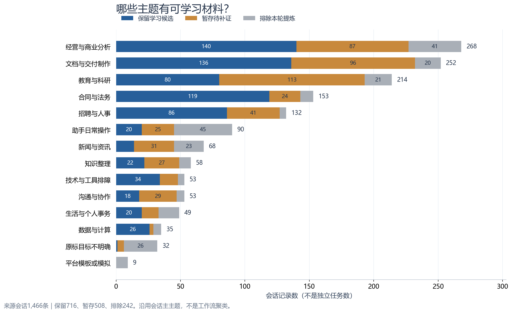
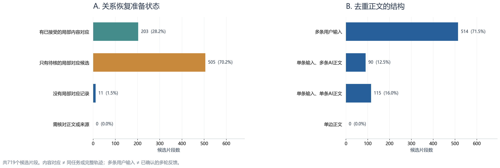
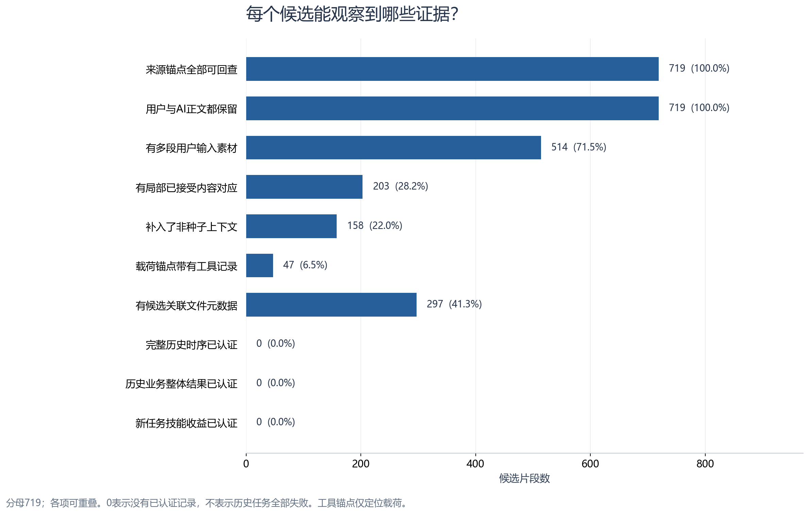

评估的是719份候选素材的证据准备程度。已有筛选认为它们有局部学习点；本轮全量核对结构与来源，正文语义复核37份。没有将未复核内容标成语义正确，也没有认证完整轨迹、任务成功或技能收益。
1,466来源会话记录
716保留候选的会话
719逐条质量卡
37本轮正文语义复核
整体评估报告 · 下载中文逐条清单 · 完整机器可读画像 · 完整会话与原始证据
查看3张柱状图（可下载PNG／SVG／PDF）



主题图原始数值 · 质量图原始数值